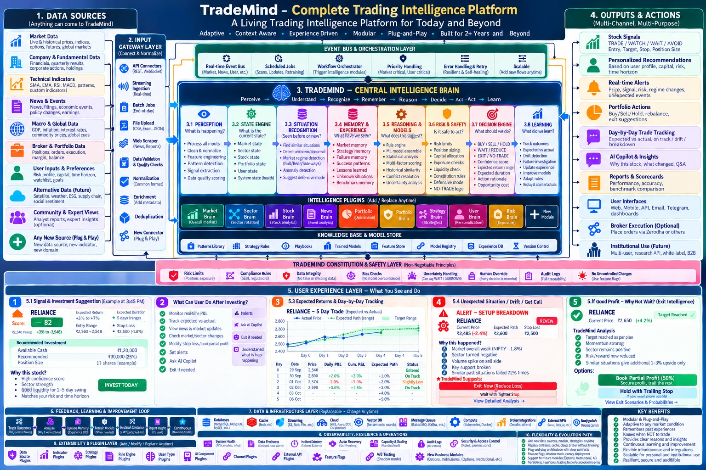
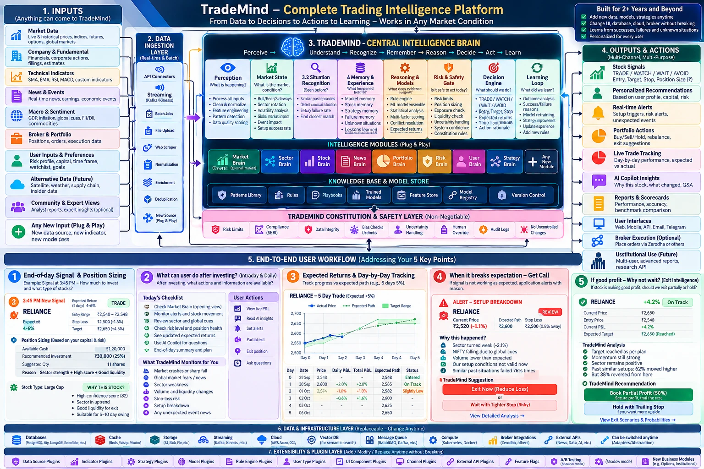

<title>Living Architecture Review</title>
<link rel="preconnect" href="https://fonts.googleapis.com">
<link rel="preconnect" href="https://fonts.gstatic.com" crossorigin>
<link rel="stylesheet" href="https://fonts.googleapis.com/css2?family=Inter:wght@400;500;600;700&family=JetBrains+Mono:wght@400;600&display=swap">
<style>
/* Layout: sticky section bar over one column. Summary and readiness score,
   the latest diagram, best things, problems, what changed, the final-picture
   checklist, a filterable box-by-box table, risks, recommendations, questions. */
:root {
  --bg: #f4f6fb; --surface: #ffffff; --surface-2: #eef2f9; --border: #d9e0ec;
  --text: #0f1a2e; --dim: #56657f; --accent: #2f6fe4; --pos: #15803d; --neg: #c62828;
  --warn: #b45309; --add: #0f766e; --plan: #7c3aed;
  --font-body: "Inter", system-ui, -apple-system, "Segoe UI", sans-serif;
  --font-mono: "JetBrains Mono", ui-monospace, Consolas, monospace;
}
@media (prefers-color-scheme: dark) {
  :root:not([data-theme="light"]) {
    --bg: #0b1120; --surface: #131c31; --surface-2: #1b2540; --border: #263352;
    --text: #e6edf7; --dim: #8b9bb4; --accent: #4f8cff; --pos: #22c55e; --neg: #ef4444;
    --warn: #f59e0b; --add: #2dd4bf; --plan: #a78bfa; color-scheme: dark;
  }
}
:root[data-theme="dark"] {
  --bg: #0b1120; --surface: #131c31; --surface-2: #1b2540; --border: #263352;
  --text: #e6edf7; --dim: #8b9bb4; --accent: #4f8cff; --pos: #22c55e; --neg: #ef4444;
  --warn: #f59e0b; --add: #2dd4bf; --plan: #a78bfa; color-scheme: dark;
}
* { box-sizing: border-box; }
body { background: var(--bg); color: var(--text); font-family: var(--font-body); font-size: 14px; line-height: 1.55; -webkit-font-smoothing: antialiased; }
h1, h2, h3 { margin: 0; text-wrap: balance; letter-spacing: -0.01em; }
h1 { font-size: 1.45rem; } h2 { font-size: 1.28rem; } h3 { font-size: 1rem; }
p { margin: 0; max-width: 78ch; }
code { font-family: var(--font-mono); font-size: 0.85em; }
.muted { color: var(--dim); } .small { font-size: 0.85rem; }
.eyebrow { font-size: 0.72rem; font-weight: 600; letter-spacing: 0.08em; text-transform: uppercase; color: var(--dim); }
.top { background: var(--surface); border-bottom: 1px solid var(--border); position: sticky; top: env(safe-area-inset-top, 0px); z-index: 5; }
.top-in { max-width: 1160px; margin: 0 auto; padding-inline: 16px; padding-block: 12px 0; }
.top-in .row { display: flex; flex-wrap: wrap; gap: 4px 12px; align-items: baseline; }
.ver { font-family: var(--font-mono); font-size: 0.74rem; color: var(--accent); border: 1px solid color-mix(in srgb, var(--accent) 45%, transparent); border-radius: 999px; padding: 1px 8px; }
.nav { display: flex; gap: 2px; overflow-x: auto; margin-top: 8px; }
.nav a { color: var(--dim); text-decoration: none; font-size: 0.86rem; font-weight: 500; padding: 7px 10px 9px; border-bottom: 2px solid transparent; white-space: nowrap; }
.nav a:hover { color: var(--text); border-bottom-color: var(--border); }
main { max-width: 1160px; margin: 0 auto; padding-inline: 16px; padding-block: 22px 70px; display: flex; flex-direction: column; gap: 34px; }
section { display: flex; flex-direction: column; gap: 14px; scroll-margin-top: 110px; }
.card { background: var(--surface); border: 1px solid var(--border); border-radius: 10px; padding: 16px; display: flex; flex-direction: column; gap: 8px; min-width: 0; }
.grid { display: grid; gap: 12px; grid-template-columns: repeat(auto-fit, minmax(250px, 1fr)); }
.two { display: grid; gap: 14px; grid-template-columns: repeat(auto-fit, minmax(320px, 1fr)); align-items: start; }
.figure { background: var(--surface); border: 1px solid var(--border); border-radius: 12px; padding: 10px; }
.figure img { display: block; width: 100%; height: auto; border-radius: 8px; }
details.figure summary { cursor: pointer; color: var(--accent); font-weight: 500; font-size: 0.88rem; padding: 4px 4px 8px; }
.hero { background: var(--surface); border: 1px solid var(--border); border-radius: 12px; padding: 20px; display: grid; gap: 18px; grid-template-columns: minmax(0, 1.4fr) minmax(0, 1fr); align-items: center; }
@media (max-width: 760px) { .hero { grid-template-columns: 1fr; } }
.score { display: flex; flex-direction: column; gap: 8px; }
.score b { font-size: 2.4rem; line-height: 1; font-variant-numeric: tabular-nums; color: var(--pos); }
.stats { display: grid; gap: 10px; grid-template-columns: repeat(auto-fit, minmax(150px, 1fr)); }
.stat { background: var(--surface); border: 1px solid var(--border); border-radius: 10px; padding: 12px 14px; }
.stat b { display: block; font-size: 1.6rem; font-variant-numeric: tabular-nums; line-height: 1.15; }
.stat span { font-size: 0.8rem; color: var(--dim); }
.stat.good b { color: var(--pos); } .stat.add b { color: var(--add); } .stat.change b { color: var(--warn); } .stat.no b { color: var(--neg); }
.stat.built b { color: var(--pos); } .stat.partial b { color: var(--accent); } .stat.not b { color: var(--dim); }
.stat.h b { color: var(--neg); } .stat.m b { color: var(--warn); } .stat.l b { color: var(--dim); }
.bar { display: flex; height: 12px; border-radius: 6px; overflow: hidden; background: var(--surface-2); }
.bar i { display: block; height: 100%; }
.pill { display: inline-flex; align-items: center; border-radius: 999px; font-size: 0.72rem; font-weight: 600; padding: 2px 8px; white-space: nowrap; }
.v-good { color: var(--pos); background: color-mix(in srgb, var(--pos) 13%, transparent); }
.v-add { color: var(--add); background: color-mix(in srgb, var(--add) 15%, transparent); }
.v-change { color: var(--warn); background: color-mix(in srgb, var(--warn) 14%, transparent); }
.v-no { color: var(--neg); background: color-mix(in srgb, var(--neg) 12%, transparent); }
.i-built { color: var(--pos); border: 1px solid color-mix(in srgb, var(--pos) 50%, transparent); }
.i-partial { color: var(--accent); border: 1px solid color-mix(in srgb, var(--accent) 50%, transparent); }
.i-not { color: var(--dim); border: 1px solid var(--border); }
.sev-h { color: var(--neg); background: color-mix(in srgb, var(--neg) 12%, transparent); }
.sev-m { color: var(--warn); background: color-mix(in srgb, var(--warn) 14%, transparent); }
.sev-l { color: var(--dim); background: var(--surface-2); }
.ok { color: var(--pos); font-weight: 700; } .part { color: var(--warn); font-weight: 700; } .miss { color: var(--neg); font-weight: 700; }
.best li b { color: var(--pos); }
.prob { border-left: 4px solid var(--border); }
.prob.h { border-left-color: var(--neg); } .prob.m { border-left-color: var(--warn); } .prob.l { border-left-color: var(--dim); }
.prob dl { margin: 0; display: grid; grid-template-columns: 70px minmax(0, 1fr); gap: 5px 10px; font-size: 0.86rem; }
.prob dt { color: var(--dim); font-size: 0.78rem; padding-top: 1px; }
.prob dd { margin: 0; }
.prob .hd { display: flex; justify-content: space-between; gap: 8px; align-items: baseline; }
.prob .id { font: 700 0.78rem var(--font-mono); color: var(--dim); }
.list-card ul { margin: 0; padding-left: 18px; display: flex; flex-direction: column; gap: 6px; font-size: 0.88rem; }
.filters { display: flex; flex-wrap: wrap; gap: 6px; align-items: center; }
.filters button { appearance: none; font: 500 0.82rem var(--font-body); color: var(--dim); background: var(--surface); border: 1px solid var(--border); border-radius: 999px; padding: 5px 11px; cursor: pointer; }
.filters button[aria-pressed="true"] { color: var(--text); border-color: var(--accent); background: var(--surface-2); }
button:focus-visible, a:focus-visible, summary:focus-visible { outline: 2px solid var(--accent); outline-offset: 2px; }
.tbl-wrap { overflow-x: auto; border: 1px solid var(--border); border-radius: 10px; background: var(--surface); }
table { border-collapse: collapse; width: 100%; font-size: 0.85rem; }
th, td { text-align: left; vertical-align: top; padding: 9px 12px; border-bottom: 1px solid var(--border); }
th { font-size: 0.72rem; letter-spacing: 0.04em; text-transform: uppercase; color: var(--dim); background: var(--surface-2); font-weight: 600; white-space: nowrap; }
tr:last-child td { border-bottom: 0; }
tr.grp td { background: var(--surface-2); font-weight: 700; font-size: 0.8rem; letter-spacing: 0.03em; }
table.wide { min-width: 980px; }
.q-list { margin: 0; padding-left: 20px; display: flex; flex-direction: column; gap: 10px; }
.states { display: grid; gap: 12px; grid-template-columns: repeat(auto-fit, minmax(260px, 1fr)); }
.states .card h3 { font-size: 0.95rem; }
.chips { display: flex; flex-wrap: wrap; gap: 6px; }
@media (max-width: 520px) { .prob dl { grid-template-columns: 1fr; } }
</style>

<header class="top">
  <div class="top-in">
    <div class="row"><h1>Living Architecture Review</h1><span class="ver">Latest · Platform v5</span><span class="muted small">“TradeMind · A Living Trading Intelligence Platform for Today and Beyond”, checked against the code and the requirements · 29 Sep 2026</span></div>
    <nav class="nav" aria-label="Sections">
      <a href="#summary">Summary</a><a href="#diagram">Diagram</a><a href="#best">Best things</a><a href="#problems">Problems</a>
      <a href="#states">Decision states</a><a href="#checklist">Final checklist</a><a href="#layers">Box by box</a><a href="#risks">Risks</a><a href="#recs">Recommendations</a>
    </nav>
  </div>
</header>

<main>

<section id="summary">
  <div class="hero">
    <div style="display:flex;flex-direction:column;gap:10px;min-width:0">
      <span class="eyebrow">Summary · latest picture</span>
      <h2>Structurally complete: the best version so far, and the remaining fixes are mostly small edits</h2>
      <p>This version brings everything together: the input gateway with validation, the event bus, an eight-step brain with state engine and situation recognition, the safety layer, observability and a flexibility path, plus a clear user experience layer. “Self-evolving” has gone from the title. What's left are <b>consistency fixes</b> (decision states, one example with the price below its stop, horizons), <b>wording</b> (an “Invest today” button, expected returns), and the same few <b>not-possible inputs</b>.</p>
    </div>
    <div class="score" id="score"></div>
  </div>
  <div class="stats" id="verdictStats"></div>
  <div class="bar" id="verdictBar" aria-hidden="true"></div>
  <div class="stats" id="implStats"></div>
  <div class="stats" id="riskStats"></div>
</section>

<section id="diagram">
  <span class="eyebrow">Your diagram</span>
  <h2>TradeMind · Complete Trading Intelligence Platform (v5)</h2>
  <div class="figure"></div>
  <details class="figure"><summary>Show the previous version for comparison</summary></details>
</section>

<section id="best">
  <span class="eyebrow">Best things</span>
  <h2>What this version gets right</h2>
  <div class="grid">
    <div class="card list-card best"><h3>Structure</h3><ul>
      <li><b>Safety layer</b> is non-negotiable, and “no uncontrolled changes” uses feature flags</li>
      <li><b>Event bus</b> and <b>observability</b> are back, with data freshness alerts</li>
      <li><b>Input gateway</b> validates and de-duplicates before anything reaches the brain</li>
      <li><b>Self-evolving</b> removed; the title now says adaptive, context aware, experience driven</li>
    </ul></div>
    <div class="card list-card best"><h3>Intelligence</h3><ul>
      <li><b>State engine</b> covers market, sector, stock, portfolio, user and system health</li>
      <li><b>Situation recognition</b> spots unknown or abnormal markets and suggests a defensive mode</li>
      <li><b>NO-TRADE logic</b> and defensive mode in the risk gate: knowing when not to trade</li>
      <li><b>Replay and counterfactuals</b> in learning: our episode replay and shadow scoring</li>
    </ul></div>
    <div class="card list-card best"><h3>User experience</h3><ul>
      <li><b>Ranges</b> instead of single numbers: return +3% to +7%, duration “5 days (range)”</li>
      <li><b>Status words</b> for each day: on track, drift, breakdown</li>
      <li><b>Opportunity cost</b> inside the decision engine</li>
      <li><b>Exit intelligence</b>: “similar situations give only 1–3% more upside” → book half, trail the rest</li>
    </ul></div>
  </div>
</section>

<section id="problems">
  <span class="eyebrow">Problems</span>
  <h2>What to fix, most important first</h2>
  <div class="filters" id="pf"></div>
  <div class="grid" id="probCards"></div>
</section>

<section id="states">
  <span class="eyebrow">Decision states</span>
  <h2>One vocabulary for the whole app</h2>
  <p>The brain's decision engine says BUY / SELL / HOLD / WAIT / REDUCE / EXIT / NO-TRADE, but the outputs say TRADE / WATCH / WAIT / AVOID. Users would see two languages. Recommended: two small sets, one for new ideas and one for what you hold, plus a system-wide switch.</p>
  <div class="states">
    <div class="card"><h3>For a stock you don't own</h3><div class="chips"><span class="pill v-good">TRADE</span><span class="pill v-add">WATCH</span><span class="pill v-change">WAIT</span><span class="pill v-no">AVOID</span></div><p class="small muted">Replaces BUY and NO-TRADE for single stocks. Matches the stock page and signal cards.</p></div>
    <div class="card"><h3>For a stock you hold</h3><div class="chips"><span class="pill v-good">HOLD</span><span class="pill v-add">MONITOR</span><span class="pill v-change">REDUCE</span><span class="pill v-no">EXIT</span></div><p class="small muted">Replaces SELL. We trade delivery (CNC), so there's no short selling; “sell” only ever means leaving a holding.</p></div>
    <div class="card"><h3>For the whole market</h3><div class="chips"><span class="pill v-good">NORMAL</span><span class="pill v-change">DEFENSIVE</span><span class="pill v-no">NO NEW TRADES</span></div><p class="small muted">The brain's NO-TRADE logic and defensive mode, shown as one banner (bear mode).</p></div>
  </div>
</section>

<section id="checklist">
  <span class="eyebrow">Final-picture checklist</span>
  <h2>How many of the earlier recommendations this version adopts</h2>
  <div class="tbl-wrap"><table class="wide" id="checkTbl"></table></div>
</section>

<section id="layers">
  <span class="eyebrow">Box by box</span>
  <h2>Every box: implemented or not, and our verdict</h2>
  <div class="filters" id="vf"></div>
  <div class="filters" id="if"></div>
  <div class="tbl-wrap"><table class="wide" id="layerTbl"></table></div>
  <p class="small muted">Implemented = in code on main today; the <code>feature/plans-manager</code> branch counts as partly built. Verdicts: Good = in code or in the requirements; Add = good, not yet in the requirements; Change = needs changing to be safe or realistic; Not possible = not possible or not advisable now.</p>
</section>

<section id="risks">
  <span class="eyebrow">Risks</span>
  <h2>Risk register</h2>
  <div class="filters" id="rf"></div>
  <div class="tbl-wrap"><table class="wide" id="riskTbl"></table></div>
</section>

<section id="recs">
  <span class="eyebrow">Recommendations</span>
  <h2>Ten edits to make this the final picture</h2>
  <ol class="q-list">
    <li>Use one decision vocabulary: TRADE / WATCH / WAIT / AVOID for new ideas, HOLD / MONITOR / REDUCE / EXIT for holdings, and a market banner.</li>
    <li>Fix example 5.4: at ₹2,485 the ₹2,500 stop has already been hit, so the card should say “Stop hit: exited at ₹2,4xx”.</li>
    <li>Replace “INVEST TODAY” with “Plan this trade” and “Add to watchlist”.</li>
    <li>Show expected return as a probability with its record: “Reached +3% in 61% of 142 similar signals”.</li>
    <li>Pick one holding period and use it everywhere (today's engine: up to 15 trading days).</li>
    <li>Merge “Portfolio (Optimization)” and “Portfolio Brain” into one plug-in.</li>
    <li>Human override: “owner can stop, halt or overrule any decision”; move “every decision is recorded” to audit logs.</li>
    <li>Remove web scraper, alternative data, social sentiment and community and expert views, or mark them “research only”.</li>
    <li>Infrastructure: show what we use (PostgreSQL + TimescaleDB, Redis, object storage, Docker) and mark the rest “possible later”.</li>
    <li>Broker execution, white-label and B2B: “later, after legal review”.</li>
  </ol>
  <h3 style="margin-top:8px">Questions for you</h3>
  <ol class="q-list">
    <li>Agree the two-set decision vocabulary?</li>
    <li>Holding period: keep up to 15 trading days, or aim for 1–5 days as the new example says?</li>
    <li>Once these ten edits are in, shall I treat this as the final picture and update the requirements document and technical blueprint to match?</li>
  </ol>
</section>

</main>

<script>
(function () {
  "use strict";
  var V = { good: "Good", add: "Add", change: "Change", no: "Not possible" };
  var I = { built: "Built", partial: "Partly built", not: "Not built" };

  // [id, severity, title, where, problem, fix]
  var P = [
    ["P1", "h", "Two decision languages", "3.7 Decision engine vs 4 Outputs", "The brain decides BUY / SELL / HOLD / WAIT / REDUCE / EXIT / NO-TRADE; stock signals show TRADE / WATCH / WAIT / AVOID.", "Two sets: TRADE / WATCH / WAIT / AVOID for new ideas; HOLD / MONITOR / REDUCE / EXIT for holdings; a market banner for NO NEW TRADES."],
    ["P2", "h", "Price is below the stop in example 5.4", "5.4 Unexpected situation", "Current price ₹2,485 (−2.4%) with stop ₹2,500, yet the card says REVIEW and offers “wait with tighter stop”. Our exit loop checks every 60 seconds, so the position would already be closed; you can't tighten a stop that's already passed.", "Show “Stop hit: exited at ₹2,4xx”. If it gapped down at the open, say “Stop hit on a gap; exited at the open price”."],
    ["P3", "h", "“INVEST TODAY” button", "5.1 Signal and investment suggestion", "A buy button with “today” is a call to action with urgency next to our recommendation. SEBI's advertising code bars pressure and promises.", "“Plan this trade” and “Add to watchlist”. Orders stay with the user's broker."],
    ["P4", "h", "Expected return shown without evidence", "5.1, 5.3, Decision engine", "“Expected return +3% to +7%” and “Score 82” read as promises. A range is better than one number, but it still needs its record.", "“Reached +3% within 15 days in 61% of 142 similar signals” and the score band's report card."],
    ["P5", "h", "Broker execution, white-label and B2B", "4 Outputs · Institutional use (future)", "Placing orders for users and white-labelling our calls for other firms bring algo-trading, broker-approval and research-distribution rules.", "Mark “later, after legal review”; users place their own orders."],
    ["P6", "m", "Holding period isn't consistent", "5.1 “1–5 day swing”, “5 days (range)” vs earlier “5–10 days”", "The engine's label is +8% before −4% within 15 trading days. The pictures now show three different holding periods.", "Pick one horizon and show it everywhere; the horizon heads (3, 5, 10, 20 days) can show odds for each."],
    ["P7", "m", "Stop −1.6% vs locked −4%", "5.1 example", "Today's locked spec is stop −4%, target +8%. The example uses −1.6%.", "Keep the locked spec unless replay proves setup-specific levels (F41)."],
    ["P8", "m", "Not-possible inputs are still there", "1 Data sources · 2 Input gateway", "Web scraper (news, reports), alternative data with social sentiment, community and expert views.", "Remove, or mark “research only”."],
    ["P9", "m", "Infrastructure over-listed", "7 Data and infrastructure", "MongoDB, MySQL, Kafka, Kubernetes and a vector DB aren't needed at this size.", "PostgreSQL + TimescaleDB, Redis, object storage, Docker; others “possible later”."],
    ["P10", "m", "Duplicate portfolio plug-ins", "Intelligence plug-ins", "“Portfolio (Optimization)” and “Portfolio Brain” are two boxes for one job.", "One Portfolio brain with optimisation inside it."],
    ["P11", "l", "Human override described as recording", "Constitution and safety", "Human override is labelled “every decision is recorded”, which is audit logging.", "“Owner can stop, halt or overrule any decision.”"],
    ["P12", "l", "“Adaptive to any market condition”", "Key benefits", "Reads as a promise that it works in every market.", "“Adapts to every market condition; protects capital in weak markets.”"],
    ["P13", "l", "Contracts and rollbacks only hinted at", "10 Flexibility path", "Contracts appear as one line; rollbacks and a change registry aren't shown.", "Show common data contracts and rollbacks explicitly."],
    ["P14", "l", "“Modify stop loss” as a user action", "5.2 After investing", "Users can move their own broker stop, but the app's stop on its call must never be loosened.", "“Tighten stop or book partial profit”; the app's stop only moves up."]
  ];

  // [recommendation from earlier reviews, status in this version, note]
  var C = [
    ["Constitution and safety layer, non-negotiable", "ok", "Present, with feature-flag control of changes"],
    ["Event bus and orchestration", "ok", "Back, with priority handling and error retry"],
    ["Observability and resilience", "ok", "Back, with data freshness and incident detection"],
    ["Input gateway with validation and quality checks", "ok", "Back"],
    ["Remove “self-evolving” from the promise", "ok", "Title now says adaptive, context aware, experience driven"],
    ["Show ranges, not single promised numbers", "ok", "Return and duration shown as ranges"],
    ["Learning with approval, not self-changing", "part", "“No uncontrolled changes” present; learning still says “adapt rules”"],
    ["Common data contracts as a layer", "part", "Mentioned in the flexibility path only"],
    ["Governance: versioning, rollbacks, change registry", "part", "Versioning and feature flags yes; rollbacks and change registry not shown"],
    ["Honest market-condition wording", "part", "Title fixed; key benefits still say “any market condition”"],
    ["Expected returns with track record", "part", "Ranges yes; record not shown"],
    ["Remove web scraper", "miss", "Still in the input gateway (news, reports)"],
    ["Remove alternative data and social sentiment", "miss", "Still there (future)"],
    ["Remove unregistered expert views and analyst reports", "miss", "Still there (optional)"],
    ["Keep infrastructure small", "miss", "Still lists many databases, Kafka, Kubernetes"],
    ["Broker execution and institutional use later, after legal review", "miss", "Still shown; white-label and B2B added"],
    ["One decision vocabulary", "miss", "New problem in this version"],
    ["Examples use the engine's real rules", "miss", "Stop −1.6%; price below stop in 5.4"]
  ];

  var L = [
    ["1 · Data sources", "Market data (live and historical, indices, options, futures, global)", "partial", "good", "Quotes, candles, indices, VIX in code; F&O and global cues planned; users need a licensed feed.", "A1, F01, P4"],
    ["1 · Data sources", "Company and fundamental (financials, quarterly results, corporate actions, holdings)", "partial", "good", "Corporate actions in code; financials and shareholding via NSE XBRL later.", "A3, F17"],
    ["1 · Data sources", "Technical indicators (SMA, EMA, RSI, MACD, patterns, custom)", "built", "good", "53 indicators; patterns planned; custom indicators affect only the user's view.", "F07, F44"],
    ["1 · Data sources", "News and events (news, filings, economic events, policy changes, earnings)", "partial", "good", "Results calendar in code; filings planned.", "F08"],
    ["1 · Data sources", "Macro and global (GDP, inflation, global cues, commodities)", "partial", "change", "FII/DII stored; macro as a calendar and context.", "F01"],
    ["1 · Data sources", "Broker and portfolio (positions, orders, execution, margin, balance)", "partial", "good", "Owner fully tracked; users read-only later.", "A8, P1"],
    ["1 · Data sources", "User inputs and preferences (risk profile, capital, time horizon, watchlist, goals)", "partial", "good", "Plans branch; profile planned.", "P1"],
    ["1 · Data sources", "Alternative data (satellite, weather, ESG, supply chain, social sentiment)", "not", "no", "Cost, licensing, little value for swings.", "—"],
    ["1 · Data sources", "Community and expert views (analyst reports, expert insights)", "not", "no", "Unregistered advice and licensed reports.", "—"],
    ["1 · Data sources", "Any new source (plug and play)", "not", "add", "Via data contracts.", "Contracts"],

    ["2 · Input gateway", "API connectors (REST, WebSocket)", "partial", "good", "REST in code; Kite WebSocket not yet used.", "A4"],
    ["2 · Input gateway", "Streaming ingestion", "not", "change", "60-second polling today.", "F09"],
    ["2 · Input gateway", "Batch jobs", "built", "good", "APScheduler.", "—"],
    ["2 · Input gateway", "File upload (CSV, Excel, JSON)", "partial", "good", "CAS and statement imports.", "P1"],
    ["2 · Input gateway", "Web scraper (news, reports)", "not", "no", "Blocked and against site terms.", "—"],
    ["2 · Input gateway", "Data validation and quality checks", "partial", "good", "Feed checks, spike guard.", "F24"],
    ["2 · Input gateway", "Normalisation, enrichment, de-duplication", "partial", "good", "Parsers, sector and cap tier, upserts.", "—"],
    ["2 · Input gateway", "New connector (plug and play)", "not", "add", "Connector contract.", "Contracts"],

    ["Event bus and orchestration", "Real-time event bus", "not", "change", "Polling first; bus later.", "F09"],
    ["Event bus and orchestration", "Scheduled jobs (scans, updates, retraining)", "built", "good", "20+ jobs; retraining is manual today.", "—"],
    ["Event bus and orchestration", "Workflow orchestrator (trigger intelligence modules)", "partial", "add", "Clock-chained today; make it dependency-driven.", "New"],
    ["Event bus and orchestration", "Priority handling (market critical, user critical)", "not", "good", "Exits before scans; Pro queue.", "P7"],
    ["Event bus and orchestration", "Error handling and retry (resilient, self-healing)", "partial", "good", "Re-login, retry, alerts; self-healing for infrastructure only.", "—"],
    ["Event bus and orchestration", "Scalable (add new flows anytime)", "partial", "good", "New jobs are easy to add.", "—"],

    ["3 · Central intelligence brain", "3.1 Perception (incl. data quality scoring)", "partial", "good", "Features and feed checks; score planned.", "F24"],
    ["3 · Central intelligence brain", "3.2 State engine (market, sector, stock, portfolio, user, system state)", "partial", "good", "Regime and system health in code.", "A1, F01"],
    ["3 · Central intelligence brain", "3.3 Situation recognition (similar, unknown or abnormal, regime, anomaly, defensive mode)", "partial", "good", "Regime in code; memory and anomaly planned.", "F35, F36"],
    ["3 · Central intelligence brain", "3.4 Memory and experience (incl. success patterns, benchmark memory)", "partial", "good", "Decision history in code.", "F18, F35"],
    ["3 · Central intelligence brain", "3.5 Reasoning and models (incl. uncertainty analysis, conflict resolution)", "partial", "good", "Rules and ML in code.", "F04, F25"],
    ["3 · Central intelligence brain", "3.6 Risk and safety (limits, sizing, capital allocation, defensive mode, NO-TRADE)", "partial", "good", "risk.check_entry, limits_for, deployable %, drawdown halt.", "A2"],
    ["3 · Central intelligence brain", "3.7 Decision engine (BUY / SELL / HOLD / WAIT / REDUCE / EXIT / NO-TRADE, return range, duration, opportunity cost)", "partial", "change", "Vocabulary doesn't match the outputs (P1).", "F06, F10, F14"],
    ["3 · Central intelligence brain", "3.8 Learning (expected vs actual, drift, failure investigation, adapt rules, replay and counterfactuals)", "partial", "change", "Replay and scoring exist; “adapt rules” only with approval.", "F23, F31, F39"],

    ["Intelligence plug-ins", "Market brain, sector brain", "partial", "good", "Regime, sector features.", "F01, F02"],
    ["Intelligence plug-ins", "Stock brain, news brain", "not", "good", "Planned.", "F03, F08"],
    ["Intelligence plug-ins", "Portfolio (optimization) and Portfolio brain", "not", "change", "Duplicate; merge into one.", "F15, F33"],
    ["Intelligence plug-ins", "Strategy brain", "partial", "good", "Strategy registry and stats.", "F27"],
    ["Intelligence plug-ins", "User brain (personalization)", "not", "change", "Personal views and sizing; advice after legal review.", "F19"],
    ["Intelligence plug-ins", "Risk brain (exposure)", "built", "good", "risk.py, limits.py.", "A2"],
    ["Intelligence plug-ins", "New module", "not", "add", "Module contract.", "Contracts"],

    ["Knowledge base and model store", "Patterns library, strategy rules, playbooks", "partial", "good", "Rules in code; patterns and playbooks planned.", "F07, F36"],
    ["Knowledge base and model store", "Trained models, model registry", "built", "good", "Registry with rollback.", "A5"],
    ["Knowledge base and model store", "Feature store", "not", "add", "Dated PostgreSQL tables.", "New"],
    ["Knowledge base and model store", "Experience DB", "partial", "good", "Signals, trades, journal.", "F18"],
    ["Knowledge base and model store", "Version control", "partial", "good", "Model versions, git.", "F23"],

    ["Constitution and safety", "Risk limits (position, exposure)", "built", "good", "Locked; overrides refused.", "A2"],
    ["Constitution and safety", "Compliance rules (SEBI)", "not", "good", "RA disclosures, advertising code.", "P3"],
    ["Constitution and safety", "Data integrity (no fake or missing data)", "partial", "good", "Dated storage, feed checks.", "F24"],
    ["Constitution and safety", "Bias checks (no model overconfidence)", "partial", "add", "Calibration exists; add look-ahead and survivorship checks.", "New"],
    ["Constitution and safety", "Uncertainty handling (can say WAIT / UNKNOWN)", "not", "good", "Planned.", "F25"],
    ["Constitution and safety", "Human override (labelled “every decision is recorded”)", "built", "change", "Kill switch exists; fix the label (P11).", "P6"],
    ["Constitution and safety", "Audit logs (full traceability)", "partial", "good", "Signals and risk events.", "P3"],
    ["Constitution and safety", "No uncontrolled changes (feature flags)", "partial", "good", "Plans switch; approvals planned.", "P6"],

    ["5 · User experience layer", "5.1 Signal and investment suggestion", "partial", "change", "Sizing matches the ladder; fix “Invest today” and levels (P3, P7).", "F47"],
    ["5 · User experience layer", "5.2 What can the user do after investing", "partial", "good", "Brief, alerts, copilot, position states.", "F52"],
    ["5 · User experience layer", "5.3 Expected returns and day-by-day tracking", "not", "add", "Typical path of similar trades with a band.", "F50"],
    ["5 · User experience layer", "5.4 Unexpected situation, drift, get a call", "not", "change", "Example has price below stop (P2).", "F12, F13"],
    ["5 · User experience layer", "5.5 Good profit, why not wait?", "partial", "good", "Half out and trailing stop exist.", "A6, F51"],

    ["6 · Feedback and learning loop", "Track outcomes", "built", "good", "evaluate_signals.", "A5"],
    ["6 · Feedback and learning loop", "Analyse why it succeeded or failed", "not", "good", "Failure investigator.", "F31"],
    ["6 · Feedback and learning loop", "Update memory", "not", "good", "Journal and episodes.", "F18, F35"],
    ["6 · Feedback and learning loop", "Retrain models (when needed)", "partial", "change", "Manual today; challenger with approval.", "F23"],
    ["6 · Feedback and learning loop", "Benchmark comparison", "partial", "good", "SMA benchmark exists; NIFTY comparison planned.", "F27"],
    ["6 · Feedback and learning loop", "Report insights", "partial", "good", "Reports, scorecards.", "F37"],
    ["6 · Feedback and learning loop", "Continuous (new rules, new data)", "not", "change", "With approval.", "F39"],

    ["7 · Data and infrastructure", "Databases (PostgreSQL, MongoDB, MySQL, …)", "built", "change", "PostgreSQL + TimescaleDB only.", "—"],
    ["7 · Data and infrastructure", "Cache (Redis, …)", "built", "good", "Redis.", "—"],
    ["7 · Data and infrastructure", "Storage and streaming (S3, Blob, file; Kafka)", "not", "change", "Object storage yes; Kafka later.", "P7"],
    ["7 · Data and infrastructure", "Cloud (AWS, Azure, GCP)", "built", "good", "DigitalOcean; portable.", "P7"],
    ["7 · Data and infrastructure", "Vector DB", "not", "change", "pgvector when needed.", "F20"],
    ["7 · Data and infrastructure", "Message queue (RabbitMQ, Kafka)", "not", "change", "Redis-backed queue first.", "P7"],
    ["7 · Data and infrastructure", "Compute (Kubernetes, Docker)", "built", "change", "Docker Compose; no Kubernetes.", "P7"],
    ["7 · Data and infrastructure", "Broker integrations (Zerodha, others)", "built", "good", "Broker interface.", "—"],
    ["7 · Data and infrastructure", "External APIs (news, data, AI)", "partial", "good", "Kite, NSE; vendor and Claude planned.", "P4"],
    ["7 · Data and infrastructure", "New tech (future)", "not", "good", "Through adapters.", "—"],

    ["8 · Observability and operations", "System health (APIs, models, infrastructure)", "partial", "good", "Heartbeat, deploy verification.", "F24"],
    ["8 · Observability and operations", "Data freshness (delayed data alerts)", "partial", "good", "Feed alerts; freshness strip planned.", "F24"],
    ["8 · Observability and operations", "Incident detection", "partial", "good", "Error alerts to Telegram; incident log to add.", "New"],
    ["8 · Observability and operations", "Auto recovery (self-healing)", "partial", "change", "Infrastructure only.", "—"],
    ["8 · Observability and operations", "Capacity and scaling", "not", "good", "At the stack split.", "P7"],
    ["8 · Observability and operations", "Audit logs, security and access control", "partial", "good", "JWT, owner-only routes; roles and audit planned.", "P3, P6"],

    ["9 · Extensibility and plug-ins", "Data source, indicator, rule engine plug-ins", "not", "add", "Contracts.", "Contracts"],
    ["9 · Extensibility and plug-ins", "Strategy plug-ins", "built", "good", "@register_strategy.", "—"],
    ["9 · Extensibility and plug-ins", "User type, UI component plug-ins", "partial", "good", "Plans branch, React.", "P6"],
    ["9 · Extensibility and plug-ins", "Channel plug-ins", "not", "good", "Planned.", "P5"],
    ["9 · Extensibility and plug-ins", "External API plug-ins", "not", "change", "Later.", "—"],
    ["9 · Extensibility and plug-ins", "Feature flags, A/B testing (shadow mode)", "partial", "good", "Plans switch, shadow strategies; never A/B real money.", "F23"],
    ["9 · Extensibility and plug-ins", "New business modules (options, institutional)", "not", "change", "Out of scope in year one.", "—"],

    ["10 · Flexibility and evolution path", "Add new data sources, models, strategies anytime", "partial", "good", "Strategy registry today; contracts next.", "Contracts"],
    ["10 · Flexibility and evolution path", "Replace database, cache, cloud, broker without breaking", "partial", "change", "Broker and cloud yes; database needs a migration.", "—"],
    ["10 · Flexibility and evolution path", "Feature flags, shadow mode, gradual rollout", "partial", "good", "Exists in early form.", "—"],
    ["10 · Flexibility and evolution path", "Plug-and-play architecture with clear contracts", "partial", "add", "Show contracts as their own layer.", "Contracts"],
    ["10 · Flexibility and evolution path", "Support future modules (options, institutional, AI)", "not", "change", "After legal review.", "—"],
    ["10 · Flexibility and evolution path", "Versioning and safe upgrade path", "partial", "good", "Migrations, rollbacks, versioning plan.", "—"],

    ["4 · Outputs and actions", "Stock signals (TRADE / WATCH / WAIT / AVOID, entry, target, stop, position size)", "partial", "good", "Needs RA registration for the public.", "F10, F47"],
    ["4 · Outputs and actions", "Personalised recommendations (capital, risk, time horizon)", "not", "change", "Sizing yes; advice after legal review.", "F19"],
    ["4 · Outputs and actions", "Real-time alerts", "partial", "good", "Telegram today.", "P5"],
    ["4 · Outputs and actions", "Portfolio actions (buy / sell / hold, rebalance, exit suggestions)", "not", "change", "Reviews, never executed for users.", "F12, F14"],
    ["4 · Outputs and actions", "Day-by-day trade tracking (on track, drift, breakdown)", "partial", "add", "Status words are a good idea.", "F50"],
    ["4 · Outputs and actions", "AI copilot and insights", "not", "good", "Pro.", "F20"],
    ["4 · Outputs and actions", "Reports and scorecards (benchmark comparison)", "partial", "good", "Verified numbers only in public.", "F37"],
    ["4 · Outputs and actions", "User interfaces (web, mobile, API, email, Telegram, dashboards)", "partial", "good", "Web, PWA, Telegram in code.", "F47"],
    ["4 · Outputs and actions", "Broker execution (optional)", "not", "change", "Later, after legal review.", "—"],
    ["4 · Outputs and actions", "Institutional use (multi-user, research API, white-label, B2B)", "not", "change", "Later; white-label brings distribution rules.", "—"]
  ];

  var R = [
    ["R1", "No proven profit after costs", "Business", "h", "High", "Replay ≈ 0% after costs vs NIFTY +6%", "Month 1 edge investigation; launch gate"],
    ["R2", "SEBI Research Analyst registration delayed", "Regulatory", "h", "Medium", "Stock signals", "Start Month 1; private beta until granted"],
    ["R3", "“INVEST TODAY” and expected-return wording read as promises and pressure", "Regulatory", "h", "Medium", "5.1, 5.3", "“Plan this trade”; probabilities with sample size"],
    ["R4", "Personalised outputs count as investment advice", "Regulatory", "h", "Medium", "User brain, personalised recommendations", "Legal opinion; personal views and sizing only"],
    ["R5", "Broker execution, white-label and B2B bring algo, broker and distribution rules", "Regulatory", "h", "High if built", "Outputs, institutional use", "Later, after legal review"],
    ["R6", "Community and expert views host unregistered advice", "Regulatory", "h", "Medium", "Data sources", "Leave out"],
    ["R7", "Look-ahead and survivorship bias", "Model", "h", "Medium", "Replay used today's watchlist", "Bias checks; dated feature store"],
    ["R8", "Overfitting from many models and plug-ins", "Model", "h", "High", "Plug-ins, models", "Holdout; walk-forward; paper first"],
    ["R9", "Scope: about 100 boxes for one developer with AI help", "Delivery", "h", "High", "Whole picture", "Contracts first; one plug-in at a time; monthly gates"],
    ["R10", "Server outage leaves positions without stops", "Operational", "h", "Medium", "GTT not built", "Broker-held stops; stack split"],
    ["R11", "Users' broker tokens and personal data exposed", "Security", "h", "Low–medium", "Broker data", "Encryption, read-only, roles, audit"],
    ["R12", "Two decision languages confuse users and code", "Product", "m", "High", "Decision engine vs outputs", "One vocabulary (two sets + banner)"],
    ["R13", "Screens show situations the engine can't produce (price below stop, −1.6% stops)", "Product", "m", "Medium", "User experience examples", "Examples built from real rules"],
    ["R14", "Learning “adapts rules” without approval", "Model", "m", "Low", "3.8 Learning, feedback loop", "Proposals only; no uncontrolled changes"],
    ["R15", "Over-engineered infrastructure", "Delivery", "m", "High if followed literally", "Data and infrastructure", "Keep it small; add on measured need"],
    ["R16", "Data licences cost more or restrict display", "Data", "m", "High", "Market data, news", "Quotes in Month 1"],
    ["R17", "Web scraper breaks or breaches terms", "Data", "m", "High", "Input gateway", "Don't build it"],
    ["R18", "Language models invent facts", "Model", "m", "Medium", "Copilot, news", "Classify only; citations"],
    ["R19", "“Real-time” vs 60-second polling", "Product", "m", "Medium", "Event bus, alerts", "Say near-real-time"],
    ["R20", "Broker API rule changes stop trading", "Operational", "m", "High", "Broker integration", "Daily canary; alerts; retry"],
    ["R21", "Costs exceed revenue at low prices", "Business", "m", "Medium", "Copilot, data, infrastructure", "Caps; monthly cost check"],
    ["R22", "Inconsistent holding periods (1–5, 5–10, 15 days)", "Product", "m", "High", "Examples, decision engine", "One horizon shown everywhere"],
    ["R23", "Contracts change and break plug-ins", "Delivery", "m", "Medium", "Contracts", "Version every contract"],
    ["R24", "A/B tests touch real money or advice", "Model", "m", "Low", "A/B testing", "Shadow mode only for decisions"],
    ["R25", "Plans branch merged without review", "Delivery", "l", "Low", "feature/plans-manager", "Review, then merge"],
    ["R26", "Alternative data spend with little value", "Business", "l", "Low if kept out", "Alternative data", "Leave out"]
  ];

  function esc(s) { return String(s).replace(/[&<>"]/g, function (c) { return { "&": "&amp;", "<": "&lt;", ">": "&gt;", '"': "&quot;" }[c]; }); }
  function count(arr, idx) { var o = {}; arr.forEach(function (r) { o[r[idx]] = (o[r[idx]] || 0) + 1; }); return o; }
  var vc = count(L, 3), ic = count(L, 2), rc = count(R, 3), cc = count(C, 1), total = L.length;
  function pct(n) { return Math.round((n || 0) / total * 100); }

  var readyScore = (cc.ok || 0) + 0.5 * (cc.part || 0);
  document.getElementById("score").innerHTML = '<span class="eyebrow">Final-picture readiness</span><b>' + Math.round(readyScore / C.length * 100) + '%</b>' +
    '<span class="small muted">' + (cc.ok || 0) + " of " + C.length + " earlier recommendations fully adopted, " + (cc.part || 0) + " partly, " + (cc.miss || 0) + " still open. Every structural layer is now present; the open items are removals and wording.</span>" +
    '<div class="bar"><i style="width:' + ((cc.ok || 0) / C.length * 100) + '%;background:var(--pos)"></i><i style="width:' + ((cc.part || 0) / C.length * 100) + '%;background:var(--warn)"></i><i style="width:' + ((cc.miss || 0) / C.length * 100) + '%;background:var(--neg)"></i></div>';

  document.getElementById("verdictStats").innerHTML = ["good", "add", "change", "no"].map(function (k) {
    return '<div class="stat ' + k + '"><b>' + (vc[k] || 0) + '</b><span>' + V[k] + " · " + pct(vc[k]) + "% of " + total + " boxes</span></div>";
  }).join("");
  var col = { good: "var(--pos)", add: "var(--add)", change: "var(--warn)", no: "var(--neg)" };
  document.getElementById("verdictBar").innerHTML = ["good", "add", "change", "no"].map(function (k) { return '<i style="width:' + pct(vc[k]) + '%;background:' + col[k] + '"></i>'; }).join("");
  document.getElementById("implStats").innerHTML = ["built", "partial", "not"].map(function (k) {
    return '<div class="stat ' + k + '"><b>' + (ic[k] || 0) + '</b><span>' + I[k] + " · " + pct(ic[k]) + "%</span></div>";
  }).join("");
  var pc = count(P, 1);
  document.getElementById("riskStats").innerHTML = '<div class="stat"><b>' + P.length + '</b><span>Problems in this picture (' + (pc.h || 0) + " high)</span></div>" +
    '<div class="stat"><b>' + R.length + '</b><span>Risks in the register</span></div>' +
    [["h", "High-severity risks"], ["m", "Medium"], ["l", "Low"]].map(function (s) {
      return '<div class="stat ' + s[0] + '"><b>' + (rc[s[0]] || 0) + "</b><span>" + s[1] + "</span></div>";
    }).join("");

  var SEV = { h: "High", m: "Medium", l: "Low" };
  function filterBar(elId, opts, labelText, onPick) {
    var el = document.getElementById(elId);
    el.innerHTML = '<span class="small muted">' + labelText + "</span>" + opts.map(function (o, i) { return '<button type="button" data-k="' + o[0] + '" aria-pressed="' + (i === 0) + '">' + esc(o[1]) + "</button>"; }).join("");
    el.addEventListener("click", function (e) {
      var b = e.target.closest("button"); if (!b) return;
      el.querySelectorAll("button").forEach(function (x) { x.setAttribute("aria-pressed", x === b ? "true" : "false"); });
      onPick(b.dataset.k);
    });
  }

  var fp = "all";
  function renderProblems() {
    document.getElementById("probCards").innerHTML = P.filter(function (p) { return fp === "all" || p[1] === fp; }).map(function (p) {
      return '<article class="card prob ' + p[1] + '"><div class="hd"><span class="id">' + p[0] + '</span><span class="pill sev-' + p[1] + '">' + SEV[p[1]] + "</span></div><h3>" + esc(p[2]) + "</h3><dl><dt>Where</dt><dd>" + esc(p[3]) + "</dd><dt>Problem</dt><dd>" + esc(p[4]) + "</dd><dt>Fix</dt><dd>" + esc(p[5]) + "</dd></dl></article>";
    }).join("");
  }
  filterBar("pf", [["all", "All (" + P.length + ")"], ["h", "High (" + (pc.h || 0) + ")"], ["m", "Medium (" + (pc.m || 0) + ")"], ["l", "Low (" + (pc.l || 0) + ")"]], "Severity:", function (k) { fp = k; renderProblems(); });
  renderProblems();

  var CL = { ok: ['ok', "Adopted"], part: ['part', "Partly"], miss: ['miss', "Still open"] };
  document.getElementById("checkTbl").innerHTML = "<thead><tr><th>Earlier recommendation</th><th>In this version</th><th>Note</th></tr></thead><tbody>" +
    C.map(function (c) { return "<tr><td>" + esc(c[0]) + '</td><td><span class="' + CL[c[1]][0] + '">' + CL[c[1]][1] + "</span></td><td>" + esc(c[2]) + "</td></tr>"; }).join("") + "</tbody>";

  var fv = "all", fi = "all";
  function renderLayers() {
    var rows = L.filter(function (r) { return (fv === "all" || r[3] === fv) && (fi === "all" || r[2] === fi); });
    var html = "<thead><tr><th>Box</th><th>Implemented</th><th>Verdict</th><th>Why</th><th>Requirement items</th></tr></thead><tbody>", last = "";
    rows.forEach(function (r) {
      if (r[0] !== last) { html += '<tr class="grp"><td colspan="5">' + esc(r[0]) + "</td></tr>"; last = r[0]; }
      html += "<tr><td>" + esc(r[1]) + '</td><td><span class="pill i-' + r[2] + '">' + I[r[2]] + '</span></td><td><span class="pill v-' + r[3] + '">' + V[r[3]] + "</span></td><td>" + esc(r[4]) + '</td><td class="small muted">' + esc(r[5]) + "</td></tr>";
    });
    if (!rows.length) html += '<tr><td colspan="5" class="muted">No boxes match these filters.</td></tr>';
    document.getElementById("layerTbl").innerHTML = html + "</tbody>";
  }
  filterBar("vf", [["all", "All verdicts"]].concat(Object.keys(V).map(function (k) { return [k, V[k] + " (" + (vc[k] || 0) + ")"]; })), "Verdict:", function (k) { fv = k; renderLayers(); });
  filterBar("if", [["all", "All"]].concat(Object.keys(I).map(function (k) { return [k, I[k] + " (" + (ic[k] || 0) + ")"]; })), "Implemented:", function (k) { fi = k; renderLayers(); });
  renderLayers();

  var fr = "all";
  function renderRisks() {
    var rows = R.filter(function (r) { return fr === "all" || r[3] === fr; });
    document.getElementById("riskTbl").innerHTML = "<thead><tr><th>#</th><th>Risk</th><th>Category</th><th>Severity</th><th>Likelihood</th><th>Comes from</th><th>Mitigation</th></tr></thead><tbody>" +
      rows.map(function (r) { return '<tr><td class="small muted">' + r[0] + "</td><td><b>" + esc(r[1]) + "</b></td><td>" + esc(r[2]) + '</td><td><span class="pill sev-' + r[3] + '">' + SEV[r[3]] + "</span></td><td>" + esc(r[4]) + "</td><td>" + esc(r[5]) + "</td><td>" + esc(r[6]) + "</td></tr>"; }).join("") + "</tbody>";
  }
  filterBar("rf", [["all", "All (" + R.length + ")"], ["h", "High (" + (rc.h || 0) + ")"], ["m", "Medium (" + (rc.m || 0) + ")"], ["l", "Low (" + (rc.l || 0) + ")"]], "Severity:", function (k) { fr = k; renderRisks(); });
  renderRisks();
})();
</script>
